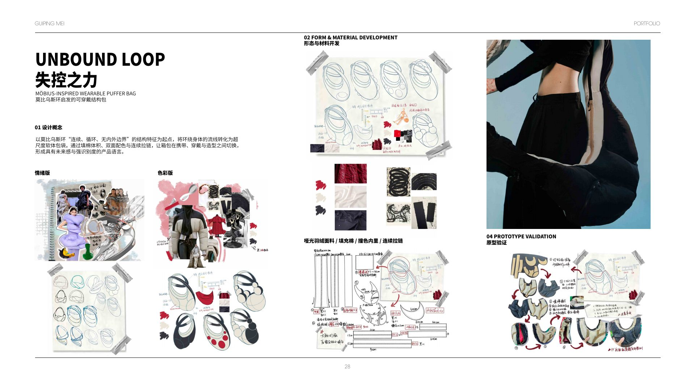
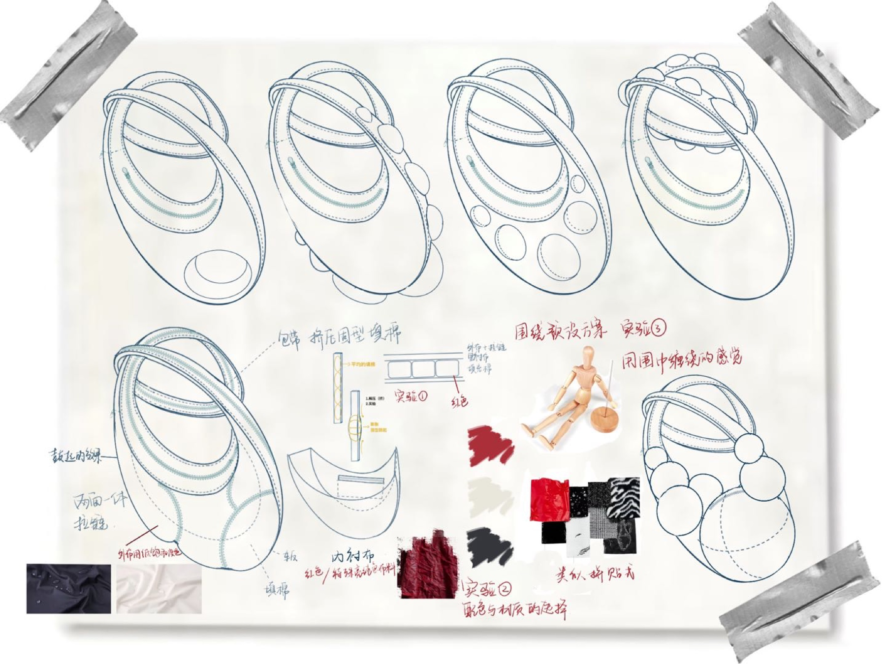
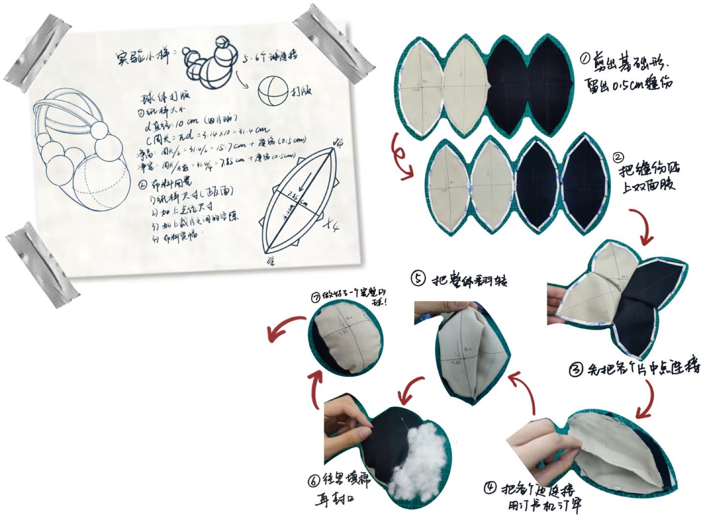
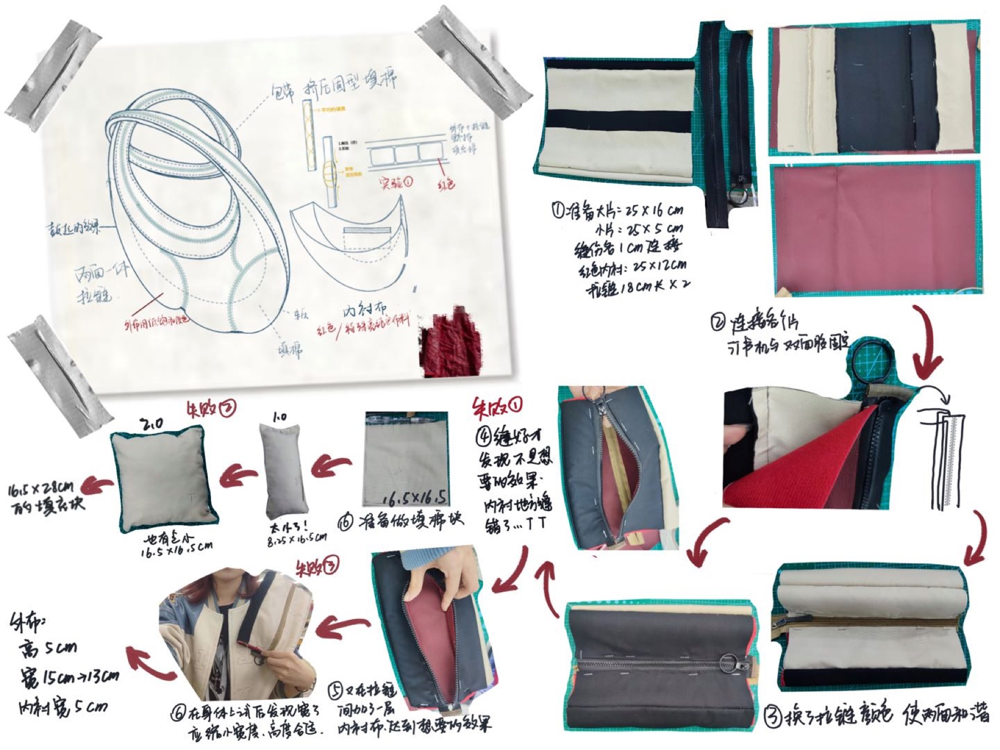
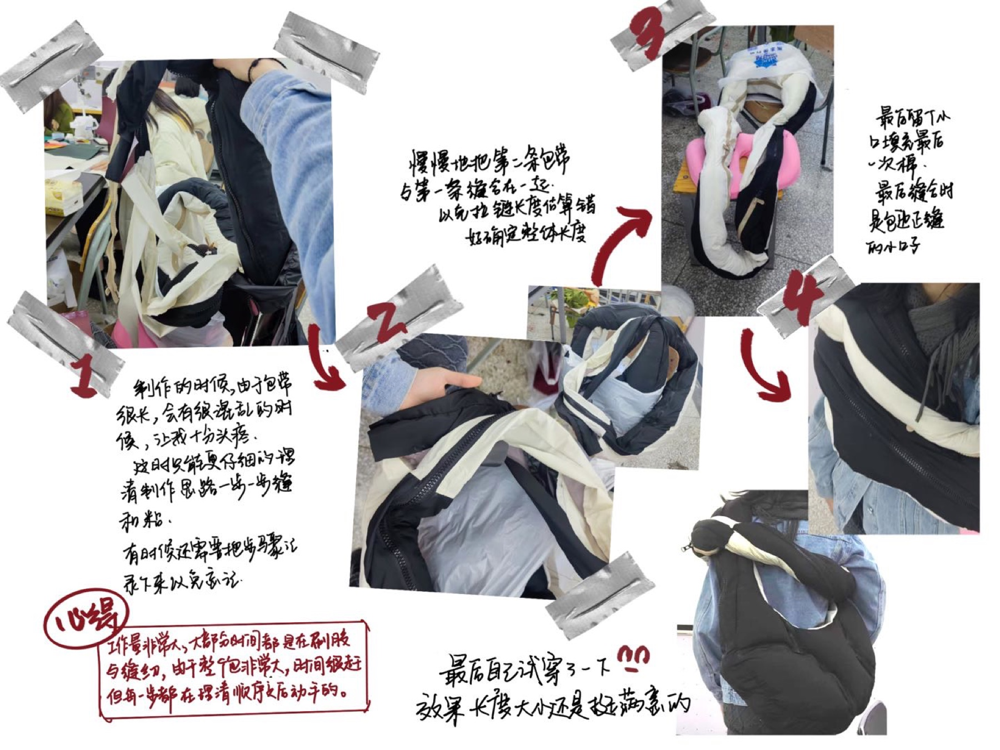
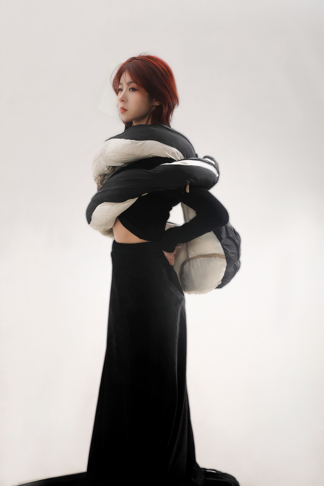
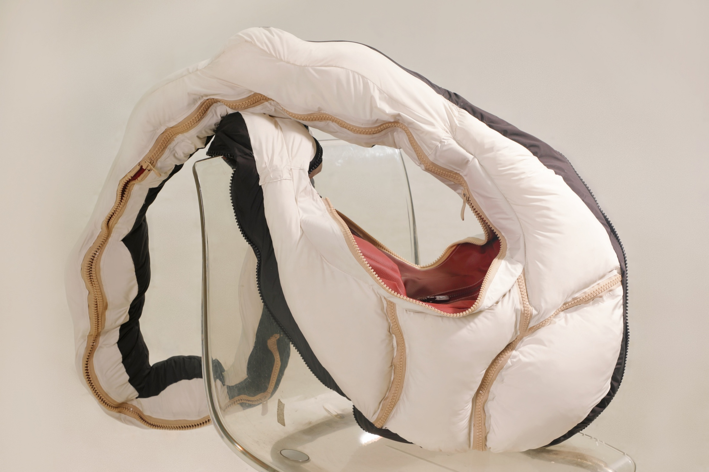
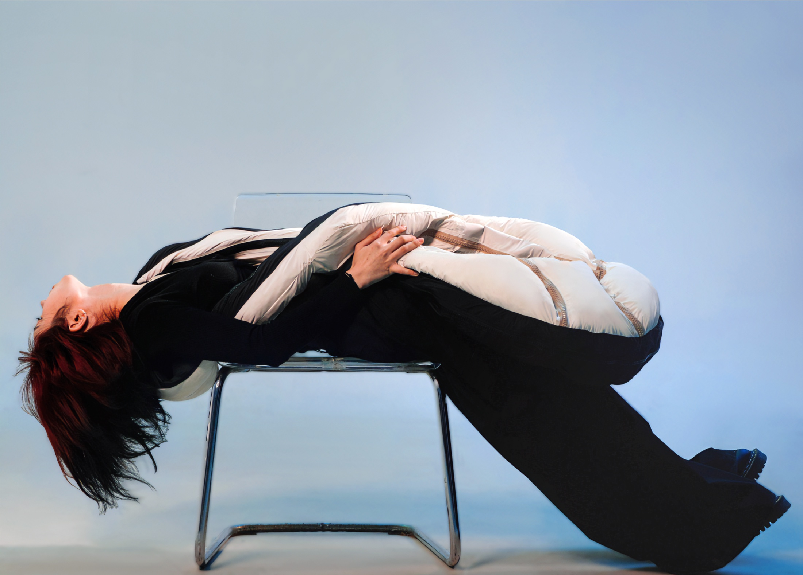
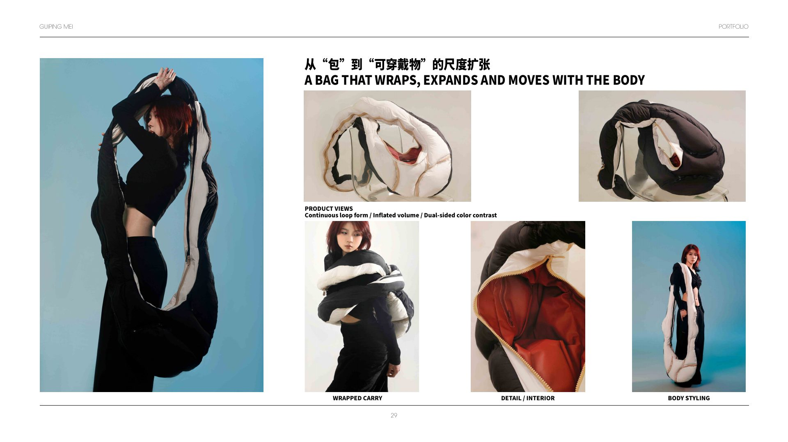

Unbound Loop / 失控之力
A bag without a fixed inside or outside.
以莫比乌斯环连续、循环、无内外边界的结构为起点，将“可控 / 失控”的张力转译为一条不断膨胀、扭转并环绕身体的软体包袋。
Padding, reversible colour and a continuous zip allow the object to shift between carry, wear, restraint and sculptural styling.
FORMContinuous loop
VOLUMEInflated soft body
USECarry / wrap / wear
01 / Development
One line expands into volume.
通过环形草图、填充测试、双面配色和连续拉链研究，将抽象几何转化为真正能够开合、缠绕与携带的结构。
Möbius study · pattern · prototype




02 / Scale & movement
The body becomes the fastening system.
超尺度让包袋不再只悬挂于身体，而是围绕、挤压并延伸身体。穿戴方式的改变同时改变它的轮廓。
Wrapped carry · interior styling
03 / Object resolution
Soft construction, precise behaviour.
连续拉链、双面色块、分段填充与内部开口共同控制软体轮廓，让“失控”的视觉感建立在可以重复穿戴的结构上。
Zip route · reversible surface · internal pocket


MaterialMatte puffer textile · Padding · Contrast lining · Continuous zipper
Infinite Loop sits between accessory and garment: carried by the body, but also reshaping it.
Next: Leather & Bag Lab →